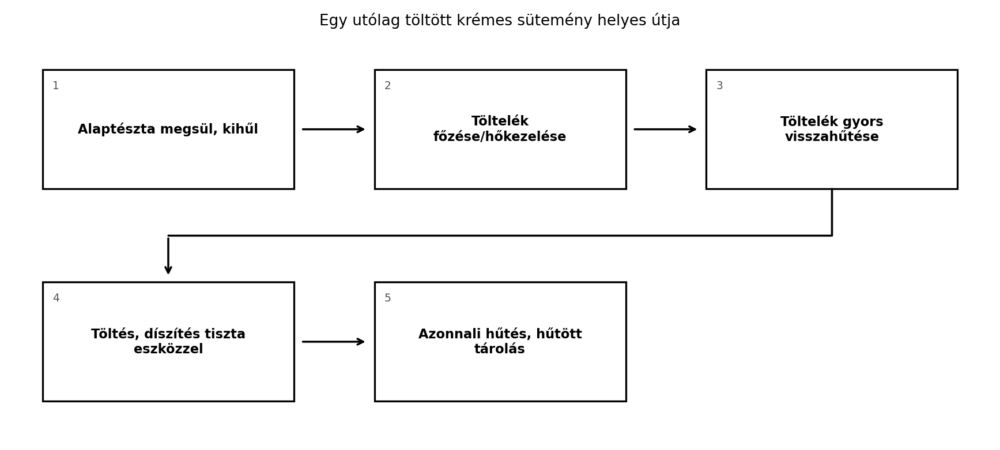

Szombat délután a pékség pultjában egy vásárló telefonál: többen rosszul lettek a délelőtt vásárolt krémes süteménytől. Az egyikük hevesen hányt, a másikuk lázas hasmenést kapott. A péknek nem elég sajnálkoznia: gyorsan végig kell gondolnia, hogy élő kórokozó okozta-e a panaszt, vagy a krémben már korábban keletkezett méreganyag. Ettől függ, hol kell hűtést, hőkezelést, személyi higiéniát vagy tisztítást javítani, és azt is, hogy a többi terméket vissza kell-e tartani. Ebben az alfejezetben a fertőzés és a mérgezés különbségét, a legfontosabb sütőipari kórokozókat és a kockázatos termékcsoportokat tanuljuk meg.
Képzeljünk el egy utólag töltött krémest. A megsült tészta önmagában kis kockázatú, de a krémbe tej, tojás és cukor kerül, majd a töltőeszközön és a pék kezén át a termék órákig szobahőmérsékleten áll. Ezen az úton a mikrobák szaporodhatnak, és egyes fajok toxint is termelhetnek.

Az ábra a helyes sorrendet mutatja. Ha a töltött terméket a töltés és a hűtés között szobahőmérsékleten tartják, az hibás gyakorlat és a legveszélyesebb pont: itt nőhet meg a csíraszám, és itt képződhet hőálló toxin.
Definíció. Élelmiszer-fertőzés akkor alakul ki, ha az élelmiszerrel élő kórokozó (például Salmonella, Listeria, E. coli) jut a szervezetbe, ott megtapad, szaporodni kezd, és károsítja a bél nyálkahártyáját vagy toxint termel a bélben.
Definíció. Élelmiszer-mérgezés (intoxikáció) akkor alakul ki, ha a kórokozó már az élelmiszerben, a tárolás vagy szállítás során előre megtermelte a méreganyagot (toxint). A tünetet nem az élő baktérium, hanem az elfogyasztott toxin okozza.
A gyakorlatban a két fogalom közötti különbség a panaszok időzítésében is látszik. A mérgezésre jellemző a rövid lappangási idő: a Staphylococcus aureus enterotoxinja például 1–6 óra alatt hányást válthat ki. A fertőzéshez általában hosszabb idő kell, mert a kórokozónak előbb el kell szaporodnia a bélben: Salmonella esetén a tünetek jellemzően 6–72 óra, gyakran 12–36 óra múlva jelentkeznek. Vannak kivételek is: a Listeria lappangása akár napok–hetek is lehet, ezért a kapcsolatot néha nehéz felismerni.
Megjegyzés. A szakirodalom toxiko-infekciónak nevezi azt az esetet, amikor élő baktérium kerül be, és a bélben termel toxint (például Clostridium perfringens). A pék számára elég, ha megjegyzi: a gyors tünet és láz hiánya inkább mérgezésre, a lassabban kialakuló, lázas hasmenés inkább fertőzésre utal. A pontos diagnózist mindig orvos vagy hatósági laboratórium állítja fel.
Továbbvitt eredmény. A fertőzés–mérgezés megkülönböztetést használjuk az A mikrobák gátlása és elpusztítása alfejezetben, amikor eldöntjük, hogy hőkezelésre, hűtésre vagy a toxin képződésének megelőzésére van-e szükség. Ugyanezt a gondolkodást alkalmazzuk az A HACCP alapjai és a veszélyelemzés alfejezetben is.
Salmonella – tipikus fertőzés. A Salmonella bélben élő baktérium; leggyakrabban nyers tojáson, baromfihúson, szennyezett felületen vagy kézen keresztül kerül élelmiszerbe. A sütőiparban a legnagyobb kockázatot a nyers tojásos krémek, tészták és a tojással szennyezett eszközök jelentik. Hőre érzékeny: a megfelelő sütés vagy pasztőrözés elpusztítja. Tanulási paraméter: 72–75 °C maghőmérséklet a termék közepén (ellenőrizendő: a pékség HACCP-terve és a hatósági útmutató). Tünetei: hasmenés, láz, hasi görcs, néha hányás. A sütés utáni utószennyeződés azonban újra veszélyt hozhat.
Staphylococcus aureus – tipikus toxinmérgezés. A Staphylococcus aureus gyakran az ember bőrén, orrában, torkában vagy gennyes sebében él. Élelmiszerbe kerülhet, ha a dolgozó a sebet vagy az orrát érinti, majd a tölteléket kézzel, habzsákkal vagy spatulával továbbítja. A baktérium a fehérjés, cukros, enyhén sós töltelékekben jól szaporodik, és hőálló enterotoxint termel. A toxin megmaradhat akkor is, ha a krémet később látszólag felmelegítik. Jellemző tünet: 1–6 órán belül heves hányás, hasi görcs, hasmenés. A megelőzés kulcsa a személyi higiénia és a hideg tárolás.
Bacillus cereus – spórás túlélő. A Bacillus cereus talajban, gabonán, lisztben, rizsben és fűszerekben elterjedt spóraképző baktérium. A spórák túlélhetik a sütést, majd a meleg, nedves termékben kicsírázhatnak. Két fő toxinja van: hánytató toxin (gyors hányás, gyakran rizses, keményítős töltelékben) és hasmenéses toxin. A sütőiparban elsősorban a hűtés nélkül tartott, nedves, keményítős töltelékek és tésztamaradékok veszélyesek. A kenyér nyúlósodását más Bacillus fajok okozzák, ezt a Kenyérbetegségek és a terméköregedés alfejezet tárgyalja.
Listeria monocytogenes – hidegtűrő veszély. A Listeria a környezetben széles körben előfordul, és ami különösen veszélyessé teszi: hűtőben is szaporodik, bár lassan. A sütőiparban nem a frissen sült forró termék a fő kockázat, hanem a sütés utáni utószennyeződés: szeletelt, csomagolt, kenettel vagy zöldséggel töltött szendvicsek, vajas krémek. Veszélyes várandósokra, idősekre, legyengült immunrendszerűekre. A hőkezelés elpusztítja, ezért a megelőzés a tiszta hűtő, a keresztszennyeződés megakadályozása és a fogyaszthatósági idők betartása.
E. coli – bélszennyeződés jelzője. A legtöbb E. coli ártalmatlan bélbaktérium, de egyes törzsek (például a vérzéses vastagbélgyulladást okozó STEC/VTEC) súlyos betegséget okozhatnak. A sütőiparban a nyers liszt fogyasztása is kockázat, mert a liszt nem steril. Ezért a nyers tésztát tilos megkóstolni. A baktérium 70 °C felett elpusztul. A kézmosás és a nyersanyagok szétválasztása itt is kulcs.
Penészgombák és mikotoxinok. A penészgomba nem baktérium, hanem gomba. A terméken látható penészfolt csak a felszíni része a hálózatnak; a penészfonalak mélyebbre is behatolhatnak. Egyes penészgombák mikotoxint termelnek: például aflatoxint, ochratoxint vagy fuzárium toxinokat. A mikotoxinok legnagyobb veszélye, hogy hőstabilak: a sütés nem bontja le őket. Ezért a penészes kenyeret, péksüteményt, diót és magvat nem szabad „megmenteni” a penész levágásával. A megelőzés alapja a száraz liszt- és magtárolás, a penészes nyersanyag kizárása az átvételnél és a penészedésre hajlamos termékek gyors hűtése, csomagolása.
Összefüggés. A tüneti idő segít az üzemi hibakeresésben: 1–6 óra alatt fellépő hányás inkább Staphylococcus aureus vagy Bacillus cereus hánytató toxinjára utal; 12–36 órás lázas hasmenés inkább Salmonella fertőzésre; napok–hetek alatti súlyos lázas vagy idegrendszeri kép Listeria gondolatát vetheti fel. Ez nem orvosi diagnózis, hanem élelmiszer-biztonsági gondolkodás.
Utólag töltött krémes, túrós, tejszínes áruk. A töltelék általában magas víztartalmú, fehérjét és cukrot tartalmaz. Ha a töltés után a termék szobahőmérsékleten áll, a csíraszám gyorsan nőhet. A veszély nő, ha nyers tojást használnak, vagy a kéz, habzsák, spatula nem tiszta. A kész krémes terméket a töltés után mielőbb hűtőbe kell tenni, és a hűtési láncot az árukiadásig fenn kell tartani. Tanulási példa: legfeljebb 5 °C-os hűtőtárolás (ellenőrizendő: a pékség HACCP-terve).
Tojásos tészták és nyers tojás. A briós, kalács, foszlós kalács sok tojást tartalmazhat; a sütés hőkezelést ad, ha a termék belső maghőmérséklete eléri a kórokozó pusztulásához szükséges értéket. A nyers tojásos, sütés nélküli krém, hab vagy bajor krém azonban közvetlen kockázat. A tojás kezelését a Tojás és tojástermékek alfejezet tárgyalja; itt a biztonsági elv: hőkezelés vagy pasztőrözött tojástermék használata.
Nyers tészta kóstolása. A nyers liszt és a nyers tojás miatt a nyers kelt tészta, omlós tészta és süteménymassza kóstolása szigorúan tilos. A pék a dagasztás után ellenőrizheti a tésztát tapintással, szaggal, kinézettel; ez nem jelenti a nyers tészta elfogyasztását. Kóstoló mintát csak megfelelően hőkezelt termékből lehet venni.
Szendvicsek, szeletelt, csomagolt termékek. A sütés után a szeletelés, csomagolás és töltés során kerülhet Listeria a termékbe. A csomagolóasztal, a szeletelőgép, a szállítórekesz és a hűtő belső higiéniája ezért nem kényelmi, hanem élelmiszer-biztonsági kérdés.
Magvas, diós, aszalt gyümölcsös termékek. A magvak, dió és aszalt gyümölcsök felületén penészgomba és mikotoxin, valamint ritkán Salmonella is lehet. A pörkölés hőkezelést adhat, de a penészes, dohos, elszíneződött tétel nem javítható pörköléssel. Az átvételnél ezért ellenőrizni kell a nedvességet, szagot és látható penészt.
Nem minden élelmiszerbiztonsági veszély mikrobiológiai. A HACCP-veszélyelemzésben a kémiai és fizikai veszélyeket is figyelembe kell venni.
Kémiai szennyezők. A leggyakoribb üzemi kémiai kockázatok: tisztítószer- és fertőtlenítőszer-maradék a rosszul öblített felületen; élelmiszeripari gépekből kiszivárgó kenőolaj; a perecsütéshez használt lúgos oldat; nem megfelelő csomagolóanyagból kioldódó anyagok. A tisztítószerek biztonságos hígításával és használatával a Tisztító- és fertőtlenítőszerek alfejezet foglalkozik. A sütés során akrilamid is képződhet; a sötétebbre sütött héjban több lehet, ezért az akrilamid-csökkentés gyakorlati elve a világosabb héjra törekvés (ellenőrizendő: az (EU) 2017/2158 rendelet és a NÉBIH útmutató aktuális előírásai).
Fizikai szennyezők. A termékbe kerülhet üvegszilánk, fémdarab, kemény műanyag, faforgács, ékszer, hajszál, kötés vagy kártevő maradványa. A fizikai veszélyeket leggyakrabban szitálással, fémdetektorral, mágnessel, törékeny anyagok ellenőrzésével és kártevőirtással szabályozzák. Az üvegbetörés, a gépkopásból származó fémdarab és a csomagolótűző kapocs a gyakorlatban a leggyakoribb fizikai veszélyek közé tartozik.
Figyelem. A kémiai és fizikai szennyezők nem mindig okoznak azonnali tünetet, de a terméket fogyaszthatatlanná, jog szerint nem biztonságossá teszik. Az ilyen terméket vissza kell tartani, és jelezni kell a felettesnek.
HACCP. Az alfejezetben tárgyalt kórokozókat és toxinokat a HACCP-rendszerben veszélyként azonosítjuk, majd minden lépésnél megvizsgáljuk, hol lehet a veszélyt megszüntetni vagy elfogadható szintre csökkenteni. A sütőipari gyakorlatban gyakori kritikus szabályozási pontok:
| Műveleti lépés | Veszély | Lehetséges szabályozás | Tanulási példa határérték |
|---|---|---|---|
| Sütés | Salmonella, E. coli, Listeria túlélése | Maghőmérséklet és idő ellenőrzése | kenyérbélben legalább 96 °C (tanulási példa), töltelékes, tojásos termék töltelékében legalább 75 °C (ellenőrizendő: HACCP-terv) |
| Töltelék készítése, hűtése | Staphylococcus aureus toxin, Bacillus cereus szaporodás | Gyors lehűtés, hűtőtárolás | a főzés végétől 2 órán belül 20 °C alá, további 4 órán belül 5 °C alá; tárolás legfeljebb 5 °C (tanulási példa, ellenőrizendő: HACCP-terv) |
| Utólagos töltés, díszítés | Kézből, eszközből utószennyezés | Személyi higiénia, fertőtlenített eszközök | Sebes, beteg dolgozó kizárva; tiszta habzsák |
| Szeletelés, csomagolás | Listeria utószennyezés | Tiszta gépkés, hűtött környezet, tiszta csomagolóanyag | Hűtőpult max. 5 °C (ellenőrizendő) |
| Nyersanyag-átvétel | Mikotoxin, penész, szennyezett magvak | Szállítmány ellenőrzése, okmányok, visszautasítás | Repedt, penészes, dohos tétel nem vehető át |
A HACCP-ben a határértékeket mindig az adott pékség termékeire, gépeire és tárolási körülményeire kell igazítani; a fenti számok tanulási példák. A monitoring gyakran egyszerű: maghőmérő, hűtő hőmérője, időmérés, szemrevételezés. Ha eltérés van, a helyesbítés azonnali: hűtőbe tenni, újrahőkezelni (ha a termék megengedi), vagy leállítani és a tételt visszatartani.
Előírás. Az élelmiszereknek biztonságosnak kell lenniük; a sütőipari üzemek a 852/2004/EK rendelet és a magyar élelmiszerjog szerint kötelesek a veszélyeket a HACCP elvei szerint kezelni (ellenőrizendő: a rendelet és a nemzeti végrehajtás aktuális előírásai). Az egyes kórokozók, toxinok és mikotoxinok határértékeit külön jogszabályok és szabványok rögzíthetik; a pontos számok és vizsgálati követelmények a kiadás előtt ellenőrizendők.
Egy pékség hétvégi krémes rendelést kapott. A töltőművelet reggel 6 órakor történt; a termékeket a cukrászati pultba tették, de a pult hűtése nem működött. A vevők délután fogyasztottak, és estére többen hányásról, hasi görcsről panaszkodtak. A panaszok 2–4 órával a fogyasztás után jelentkeztek, láz nélkül. A hűtőpult hőmérsékletét utólag 18 °C-nak mérték; a töltelék készítésénél az egyik dolgozó kötés nélküli, gennyes sebet takart kesztyűvel. A járványügyi gondolkodás Staphylococcus aureus toxinra utal: rövid lappangás, hányásos tünetek, hűtés hiánya, személyi higiéniai hiba. A tanulság: a töltelékes termékeknél a hűtési lépés nem elhagyható, és a sebes dolgozó nem dolgozhat élelmiszerrel.
Számítás. A pékség a hibás napon 120 darab krémes süteményt töltött. Ha darabonként 80 g töltelék került a termékbe, akkor . Ezt a mennyiséget kellett volna 5 °C alá hűteni és hűtve tartani; a hűtőkapacitás hiánya a teljes tételt érintette.
Számítás. Egy másik esetben a sütőből kivett briós maghőmérséklete 65 °C volt. A kész kelt tészta bele a sütés végére jellemzően 96–98 °C (tanulási példa, ellenőrizendő: technológiai lap); a 65 °C sem a dúsított kelt finompékáru technológiai lap szerinti célértékét (tanulási példa: kb. 90–96 °C, ellenőrizendő), sem az átsültséget nem éri el, ezért a tételt visszatartották.
Számítás. A penészes kenyér esetében nincs olyan mennyiségi számítás, amely a penészes rész eltávolítását biztonságossá tenné: a mikotoxin láthatatlanul szétterjedhet. A szabály itt minőségi: a penészes tételt el kell különíteni és le kell selejtezni.
A termékbiztonsági ellenőrzés a sütőiparban nem csak laboratóriumi vizsgálat. A napi gyakorlatban a következőket kell ellenőrizni:
Szabály. A minőségellenőrzés soha nem helyettesítheti a HACCP előírt méréseit. Az érzékszervileg szép termék is lehet veszélyes, ha a láthatatlan csíraszám vagy toxin jelen van.
1. feladat (A) Definiáld röviden: élelmiszer-fertőzés, élelmiszer-mérgezés, mikotoxin.
2. feladat (A) Párosítsd a kórokozót és a jellemző tüneti időt: Salmonella, Staphylococcus aureus, Bacillus cereus hánytató toxin. Melyik miért utalhat az egyik vagy másik mechanizmusra?
3. feladat (B) Egy pékségben túrós batyuhoz a tölteléket reggel 7 órakor készítik, a termékeket 11 óráig szobahőmérsékleten tartják, mielőtt sütnék. Milyen veszélyeket nevezel meg? Melyik HACCP-ellenőrzési pontot javasolod?
4. feladat (B) Egy krémes süteménynél a fogyasztó 3 óra múlva hány. A hűtőpult hőmérséklete 12 °C volt, a dolgozó kezén kötés nélküli seb volt. Mi a legvalószínűbb ok? Mit kell tenni?
5. feladat (C) Miért nem lehet a penészes kenyeret „megmenteni” a penész levágásával? Foglald össze a megelőzés három lépését a liszt- és magtárolástól a késztermékig.
6. feladat (D) Tervezz rövid CCP-ellenőrzési tervet egy utólag töltött, tojásos krémű készítményhez. Add meg: folyamatlépés, veszély, monitoring (mit, hogyan, mikor), és a szükséges helyesbítés.
1. A fertőzés élő kórokozó bejutásával és a bélben való szaporodásával jár; a mérgezést az élelmiszerben előre képződött toxin okozza; a mikotoxin penészgomba anyagcsereterméke, gyakran hőstabil.
2. Salmonella: 6–72 óra, gyakran 12–36 óra, lázas hasmenés – fertőzés. Staphylococcus aureus: 1–6 óra, heves hányás – toxinmérgezés. Bacillus cereus hánytató toxin: 1–5 óra – toxinmérgezés. A rövid idő és a láz hiánya mérgezésre, a hosszabb idő és láz fertőzésre utal.
3. A túrós töltelék szobahőmérsékleten Staphylococcus aureus szaporodásnak és toxinképzésnek lehet kitéve; a nyersanyagokból Salmonella is bekerülhet. A sütés a baktériumot elpusztítja, de a már képződött hőálló enterotoxint nem; ezért a kritikus pont a töltelék hűtése (tanulási példa: legfeljebb 5 °C, ellenőrizendő), a szobahőn tartott tölteléket nem szabad felhasználni. A sütési maghőmérséklet a Salmonella miatt marad ellenőrzési pont. A HACCP-pont: töltelék készítése/hűtése; sütés.
4. A legvalószínűbb Staphylococcus aureus toxinmérgezés. Gyors tüneti idő, hűtési hiba és sebes kéz. Teendő: a tétel visszahívása, a dolgozó kizárása, a hűtőpult javíttatása, a HACCP-napló és a hatósági jelzés a felettes irányításával.
5. A penészfonalak és a mikotoxinok láthatatlanul terjedhetnek; a toxin hőstabil. Megelőzés: száraz, hűvös liszt- és magtárolás; átvételi ellenőrzés (penész, doh, nedvesség); késztermék gyors hűtése, csomagolása, penészedésre hajlamos termékek rövid eltarthatósága.
6. Például: Sütés – veszély: Salmonella túlélése – monitoring: maghőmérséklet minden tételnél sütés végén – határ: kenyérbélben legalább 96 °C, töltelékben legalább 75 °C (tanulási példa, ellenőrizendő). Töltelék hűtése – veszély: Staphylococcus aureus toxin – monitoring: hűtő hőmérséklet, idő – határ: 2 órán belül 20 °C alá, további 4 órán belül 5 °C alá (tanulási példa, ellenőrizendő). Töltés – veszély: utószennyezés – monitoring: dolgozói egészség, eszközfertőtlenítés. Eltérés esetén: visszatartani, hűtés, selejtezés, javítás.
Az élelmiszer-fertőzést élő kórokozó bejutása, az élelmiszer-mérgezést az élelmiszerben előre megtermelt toxin okozza. A fő sütőipari kockázatok: Salmonella nyers tojásból, Staphylococcus aureus emberi sebből, kézből, Bacillus cereus spórás túlélőből, Listeria hűtött utószennyezésből, E. coli nyers lisztből, valamint penészgombák hőstabil mikotoxinjai. A kockázatos termékek közé tartoznak az utólag töltött krémes, túrós, tejszínes áruk, a nyers tojásos krémek és a nyers tészta. A megelőzés alapja: sütési maghőmérséklet-ellenőrzés, gyors hűtés, személyi higiénia, tiszta eszközök, penészes tétel kizárása. A kémiai és fizikai szennyezőket a HACCP-ben szintén veszélyként kell kezelni. Továbbvitt eredmény: a fertőzés–mérgezés és a kórokozók jellemzői az A mikrobák gátlása és elpusztítása, a HACCP veszélyelemzés (A HACCP alapjai és a veszélyelemzés), a tojáskezelés (Tojás és tojástermékek) és a sütési folyamat (Sütési eljárások, különleges sütés, átsültség és elősütés) alfejezetekben kerülnek tovább.